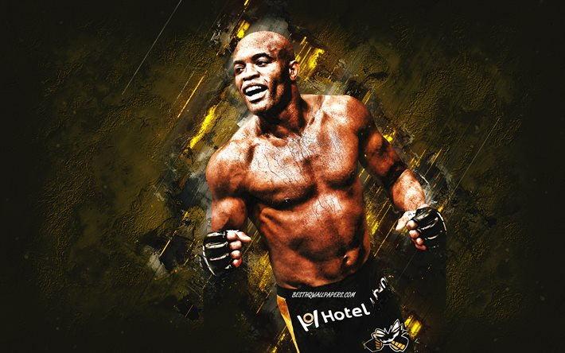
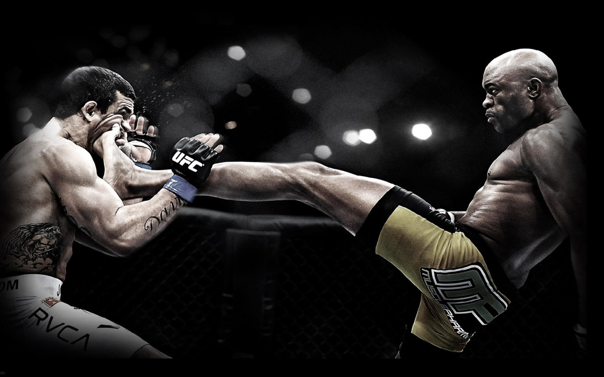
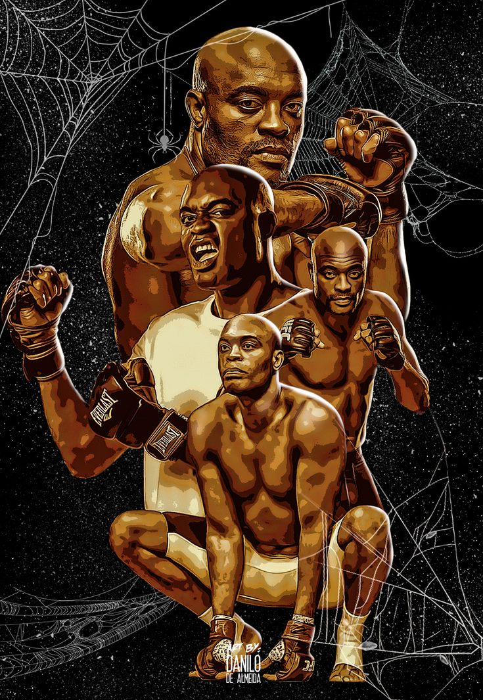

Carreira de Anderson Silva no UFC
Em 2006, Silva passou a combater no Ultimate Fighting Championship no evento Ultimate Fight Night 5 nos Estados Unidos. No dia 28 de junho de 2006, sua estreia, saiu vitorioso sobre Chris Leben. Anderson nocauteou-o aos 49 segundos do primeiro round, a luta mais rápida de sua carreira.
Depois da luta contra Leben, uma enquete no site do UFC foi feita para escolher quem seria o próximo oponente de Anderson. A maioria dos votos foi para o até então campeão dos pesos médios, Rich Franklin. Ao dia 14 de outubro de 2006, no UFC 64, Anderson Silva teve a oportunidade de disputar o cinturão da categoria de pesos médios no UFC, onde venceu no primeiro round de forma arrasadora. Essa luta é considerada como uma das melhores de sua carreira, pois Anderson mostrou fantásticos movimentos e golpes como joelhadas e chutes. Anderson prendeu Rich em seu clinch e desferiu vários golpes e aos três minutos e cinquenta e três segundos do primeiro round, Franklin esquivou-se de um dos socos de Anderson antes de cair no chão e decretar a vitória do brasileiro.[10] Ele foi o segundo oponente que derrotou Franklin, depois de Lyoto Machida.
Em 3 de fevereiro de 2007, no UFC 67, Anderson estava programado para lutar contra o vencedor do reality show "The Ultimate Fighter 4" Travis Lutter. Essa seria sua primeira luta depois da sua conquista de cinturão contra Rich Franklin, em outubro de 2006, sendo assim sua primeira defesa de cinturão. Contudo, o adversário se apresentou acima do limite do peso da categoria dos pesos médios (84 quilos) e a luta então não foi considerada como a principal. Anderson Silva, venceu o adversário prendendo-o com um triângulo, enquanto estava por baixo, no chão. No meio do segundo round.
